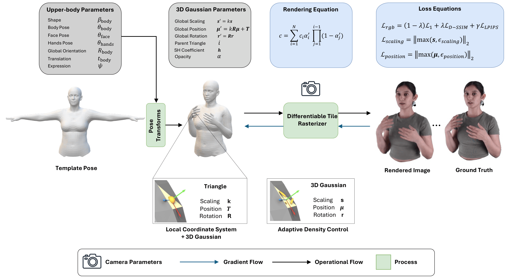

Creating photorealistic 3D human avatars with realistic upper-body motion remains challenging. Existing approaches either focus on the head and overlook hand gestures, or reconstruct the full body but fail to preserve fine-grained facial fidelity and hand pose accuracy. As a result, current methods struggle to capture the subtle dynamics of facial expressions and hand gestures that are crucial for natural human communication.
To address these limitations, we propose MVFGA, a multi-view-consistent pipeline for generating realistic upper-body avatars. Our approach models the face and hands separately and fuses them with a parametric upper-body mesh model, enabling fine-grained facial expression capture and accurate hand articulation. We then splat 3D Gaussians onto the obtained mesh, enabling high-quality rendering of dynamic avatars from novel viewpoints.
We also introduce MVFGA-MoCap, a multi-view upper-body motion capture dataset featuring controlled facial expression sequences, diverse hand gestures, and free-form communication. Experiments show that MVFGA generates visually realistic avatars with high-fidelity facial expressions and hand motions, outperforming baselines for upper-body avatar animation.

This work was partially funded by the Horizon Europe programme under the project IRIS-XR, Grant Agreement No. 101298672.
@article{10.1111:cgf.70567,
journal = {Computer Graphics Forum},
title = {{Multi-View Face and Gesture Animation with Dynamic Gaussians}},
author = {Javanmardi, A. and Jeetmal, V. K. and Millerdurai, C. and Pagani, A. and Stricker, D.},
year = {2026},
publisher = {The Eurographics Association},
ISSN = {1467-8659},
DOI = {10.1111/cgf.70567}
}